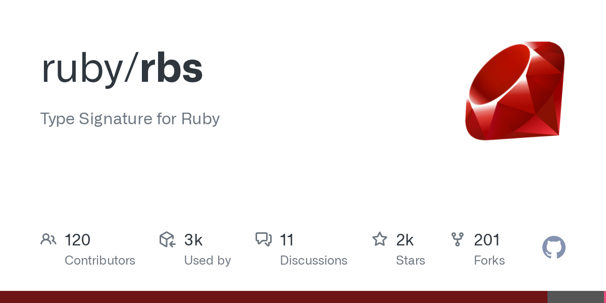

Types in Ruby
By Guillaume Briday
Before starting
- Quick introduction
- Early development
- Comparison with other languages
- Very complicated and vast world
Why types are cool?
- Better IDE integration
- Give information to other developers
- Documentation for the code
- Can find bugs during development
- etc.
Why types are cool?
Typesception
Different type of types.
- Static & Dynamic typing
- Nominal & Structural typing
- Gradual typing
Static typing
Types are checked at compile time.
// src/main/java/io/core/person/Person.java
public class Person {
private String name;
private int age;
public Person(String name, int age) {
this.name = name;
this.age = age;
}
public String getName() {
return name;
}
}
public class Main {
public static void main(String[] args) {
Person person = new Person("Alice", 30);
}
}
Dynamic typing
Types are checked at runtime.
# person.rb
class Person
def initialize (name, age)
@name = name
@age = age
end
end
person = new Person("Alice", 30)
Nominal typing
Type is defined by its name.
class Dog {
public function speak() {
return "whoaf";
}
}
class Cat {
...
}
function speak(Dog $animal): void {
echo $animal->speak();
}
speak(new Dog); ✅ //=> "whoaf"
speak(new Cat); ❌ Uncaught TypeError: speak(): Argument #1 ($animal) must be of type Dog, Cat given.
Structural typing
Type is defined by its structure.
class Dog {
speak () {
return 'whoaf'
}
}
const Cat = {
speak () {
return 'miaou'
}
}
function speak (animal: Dog) {
console.log(animal.speak())
}
speak(new Dog) ✅ //=> "whoaf"
speak(Cat) ✅ //=> "miaou"
Gradual typing
Best of both worlds.- Gradually add static typing to dynamic languages
- Types are checked by linters
- Types are reported at runtime
- Nominal or Structural
What about Ruby? 💎
It's all about Duck Typing."If it walks like a duck, and it quacks like a duck, then it must be a duck"
What about Ruby? 💎
Duck typing is about defining objects by what they do instead of who they are.
Duck typing in real life 🦆
class Trip
def prepare(preparers)
preparers.each do |preparer|
case preparer
when Mechanic then preparer.prepare_bicycles(bicycles)
when TripCoordinator then preparer.buy_food(customers)
when Driver
preparer.gas_up(vehicle)
preparer.fill_water_tank(vehicle)
end
end
end
end
class Mechanic
def prepare_bicycles(bicycles)
#...
end
end
class TripCoordinator
def buy_food(customers)
# ...
end
end
class Driver
def gas_up(vehicle)
#...
end
def fill_water_tank(vehicle)
#...
end
end
Duck typing in real life 🦆
class Trip
def prepare(preparers)
preparers.each do |preparer|
preparer.prepare_trip(self)
end
end
end
# when every preparer is a Duck that responds to ‘prepare_trip’
class Mechanic
def prepare_trip(trip)
prepare_bicycles(trip.bicycles)
end
end
class TripCoordinator
def prepare_trip(trip)
buy_food(trip.customers)
end
end
class Driver
def prepare_trip(trip)
gas_up(trip.vehicle)
fill_water_tank(trip.vehicle)
end
end
Duck typing in real life 🦆
Enforce it with modules
module Preparer
def prepare_trip(trip)
raise "Not implemented"
end
end
class Trip
def prepare(preparers)
preparers.each do |preparer|
preparer.prepare_trip(self)
end
end
end
class Mechanic
include Preparer
end
class TripCoordinator
include Preparer
end
class Driver
include Preparer
end
Duck typing in real life 🦆
def import_state_badge(import)
variant = {
enqueued: :secondary,
processing: :info,
error: :danger,
completed: :success
}[import.state.to_sym]
badge_tag(value: import.state.titleize, variant: variant)
end
<%= import_state_badge(@import) %>
<%= import_state_badge(@budget) %>
<%= import_state_badge("completed") %>
The problem with Duck Typing 🦆
- No autocompletion
- Types are checked at runtime
- Hard to find occurrences
- No hint of what you can do or not
The problem with Duck Typing 🦆
Solution in Ruby
Basically.d.ts files for Ruby.

RBS in action
You ruby code.
# working_day_calculator.rb
require 'date'
class WorkingDayCalculator
attr_accessor :period_start, :period_end
attr_reader :days_off
def initialize
@days_off = []
end
def add_day_off(date)
@days_off << date
end
def calculate_working_days
((period_start..period_end).to_a - days_off).length
end
end
RBS in action
Your declaration file.
# working_day_calculator.rbs
class WorkingDayCalculator
attr_accessor period_start: Date
attr_accessor period_end: Date
attr_reader days_off: Array[Date]
def initialize: -> void
def add_day_off: (Date date) -> Array[Date]
def calculate_working_days: -> untyped
end
RBS in action
Steep is a Static type checker for Ruby.
# Type checking files:
....................................................................................F
working_day_calculator_test.rb:13:17: [error] Cannot pass a value of type `::String` as an argument of type `::Date`
│ ::String <: ::Date
│ ::Object <: ::Date
│ ::BasicObject <: ::Date
│
│ Diagnostic ID: Ruby::ArgumentTypeMismatch
│
└ calc.add_day_off('BOOM')
~~~~~~~~~~
Detected 1 problem from 1 file
RBS inline
https://github.com/soutaro/rbs-inline
# rbs_inline: enabled
class Person
attr_reader :name #: String
attr_reader :addresses #: Array[String]
# @rbs name: String
# @rbs addresses: Array[String]
# @rbs return: void
def initialize(name:, addresses:)
@name = name
@addresses = addresses
end
def to_s #: String
"Person(name = #{name}, addresses = #{addresses.join(", ")})"
end
# @rbs &block: (String) -> void
def each_address(&block) #:: void
addresses.each(&block)
end
end
Sorbet 🍦 by Stripe
Sorbet is a Static type checker for Ruby.Conclusion
- Still early stage of development
- But the pace is not great...
- It's important for Ruby adoption
- RBS roadmap
- Far from being production ready
- Should copy TypeScript DX